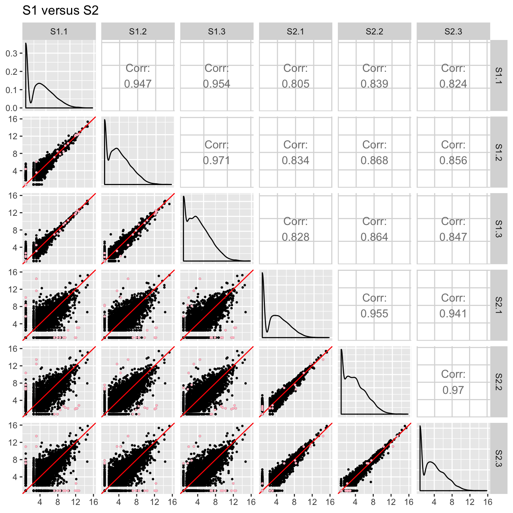
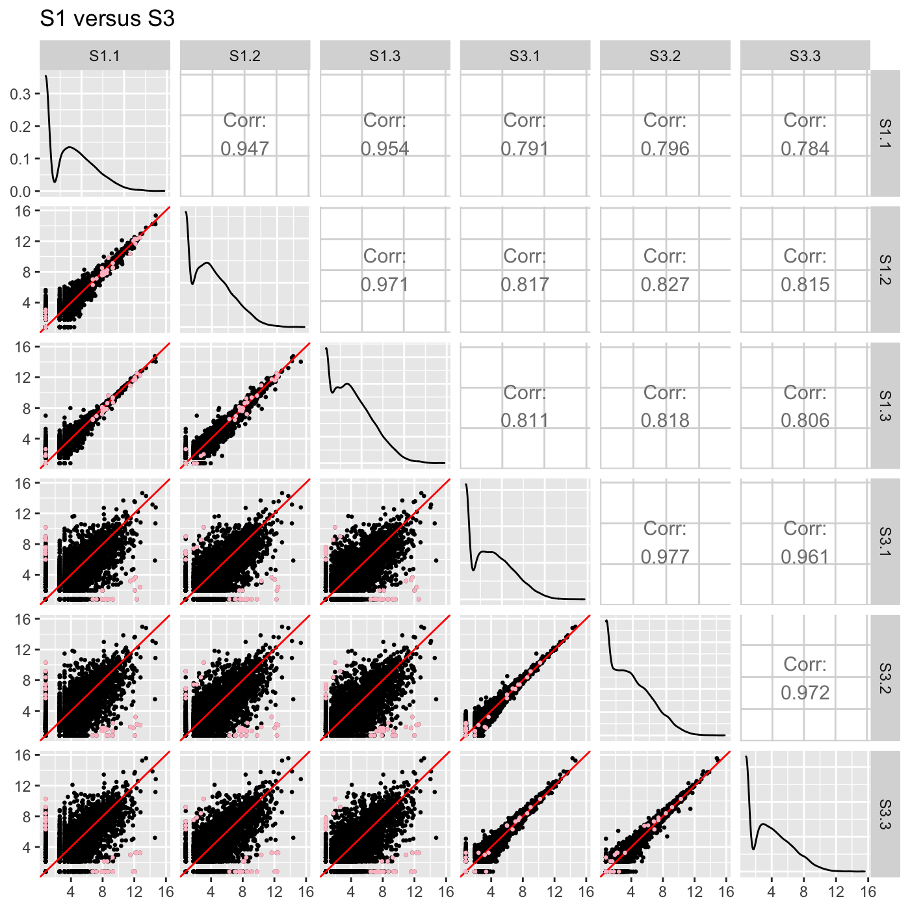
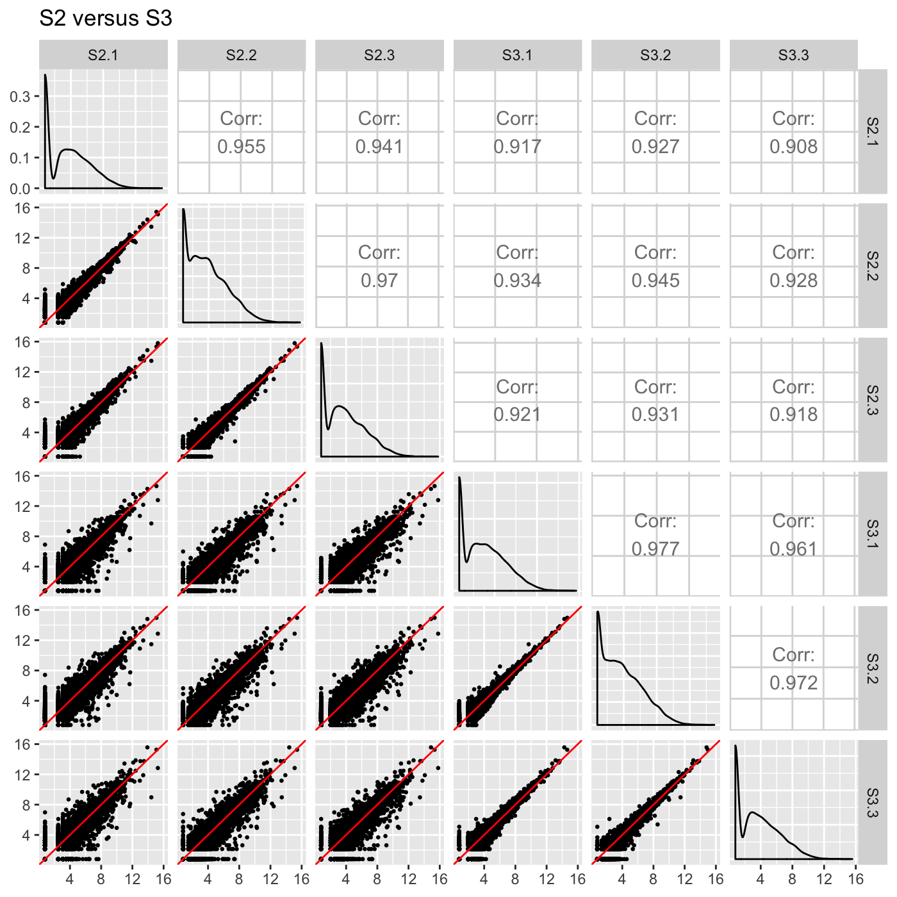
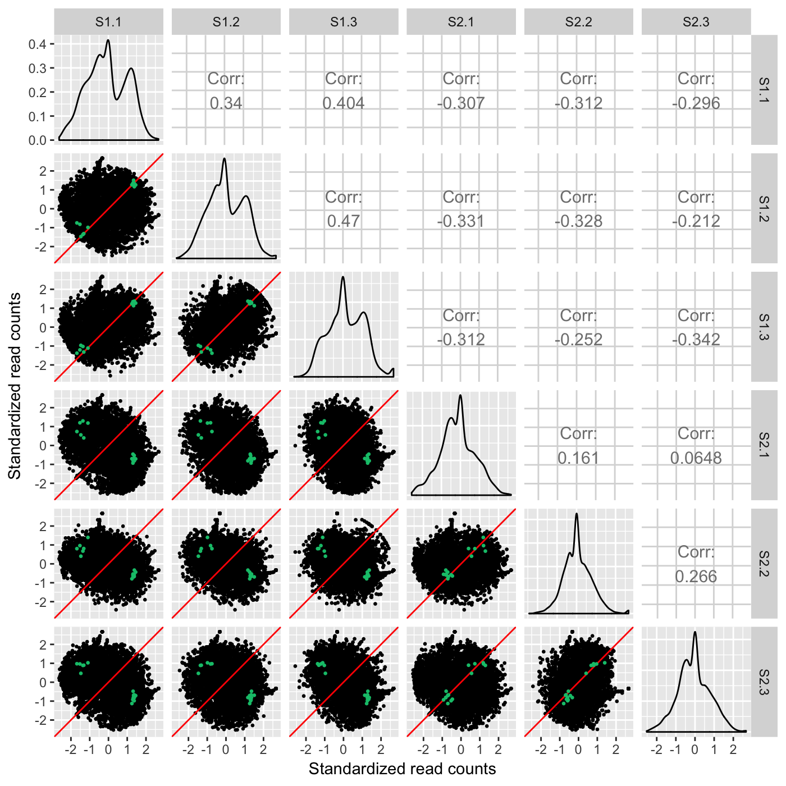
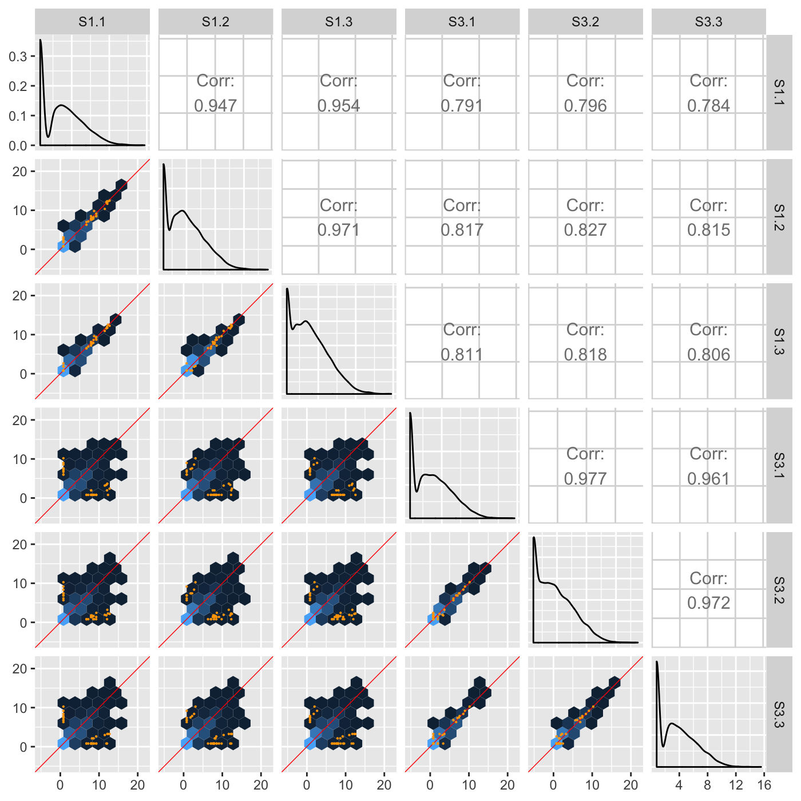
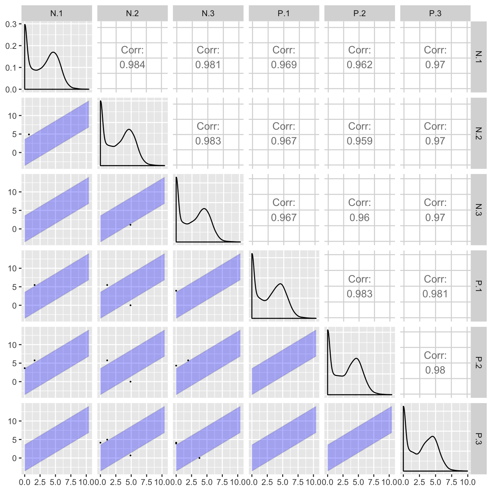
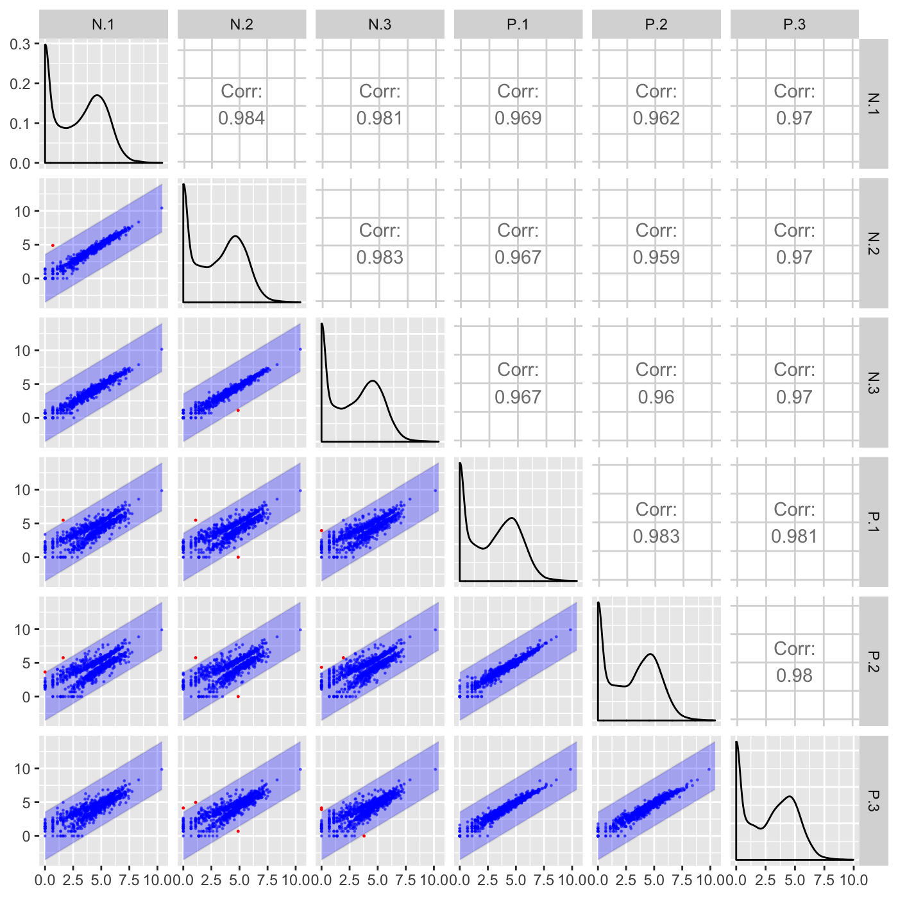
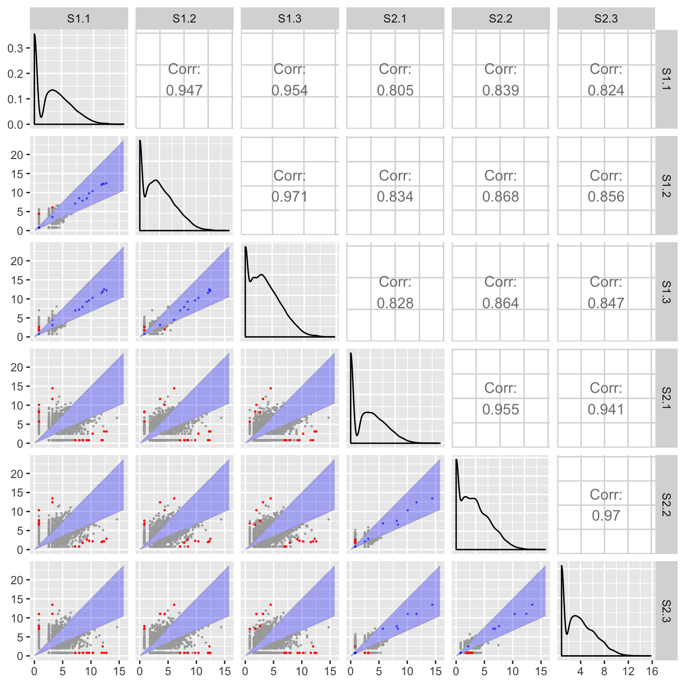

Plot static scatterplot matrix. Optionally, superimpose differentially expressed genes (DEGs) onto scatterplot matrix.
plotSM(data = data, dataMetrics = NULL, option = "allPoints", saveFile = TRUE, outDir = getwd(), pointSize = 0.5, pointColor = "orange", xbins = 10, threshFC = 3, threshOrth = 3, threshVar = "FDR", threshVal = 0.05, geneList = NULL)
| data | DATA FRAME | Read counts |
|---|---|
| dataMetrics | LIST | Differential expression metrics; default NULL |
| option | CHARACTER STRING ["foldChange" | "orthogonal" | "hexagon" | "allPoints"] | The type of plot; default "allPoints" |
| saveFile | BOOLEAN [TRUE | FALSE] | Save file to outDir; default TRUE; used in all options |
| outDir | CHARACTER STRING | Output directory to save all plots; default current directory; used in all options |
| pointSize | INTEGER | Size of plotted points; default 0.5; used for DEGs in "hexagon" and "allPoints" and used for all points in "foldChange" and "orthogonal" |
| pointColor | CHARACTER STRING | Color of overlaid points on scatterplot matrix; default "orange"; used for DEGs in "hexagon" and "allPoints" and used for all points in "foldChange" and "orthogonal" |
| xbins | INTEGER | Number of bins partitioning the range of the plot; default 10; used in option "hexagon" |
| threshFC | INTEGER | Threshold of fold change; default 3; used in option "foldChange" |
| threshOrth | INTEGER | Threshold of orthogonal distance; default 3; used in option "orthogonal" |
| threshVar | CHARACTER STRING | Name of column in dataMetrics object that is used to threshold significance; default "FDR"; used in all options |
| threshVal | INTEGER | Maximum value to threshold significance from threshVar object; default 0.05; used in all options |
| geneList | CHARACTER ARRAY | List of gene IDs to be drawn onto the scatterplot matrix of all data. Use this parameter if you have predetermined genes to be drawn. Otherwise, use dataMetrics, threshVar, and threshVal to create genes to be drawn onto the scatterplot matrix; default NULL; used in "hexagon" and "allPoints" |
List of n elements of scatterplot matrices, where n is the number of treatment pair combinations in the data object. The subset of genes that are superimposed are determined through the dataMetrics or geneList parameter. If the saveFile parameter has a value of TRUE, then each of these scatterplot matrices is saved to the location specified in the outDir parameter as a JPG file.
There are seven options:
"foldChange": Plots DEGs onto scatterplot matrix of fold changes
"orthogonal": Plots DEGs onto scatterplot matrix of orthogonal distance
"hexagon": Plot DEGs onto scatterplot matrix of hexagon binning
"allPoints": Plot DEGs onto scatterplot matrix of all data points
# Read in data and metrics (need for all examples) data(soybean_cn_sub) data(soybean_cn_sub_metrics) data(soybean_ir_sub) data(soybean_ir_sub_metrics) # Create standardized version of data (need for some examples) library(matrixStats) library(ggplot2) soybean_cn_sub_st <- as.data.frame(t(apply(as.matrix(soybean_cn_sub[,-1]), 1, scale))) soybean_cn_sub_st$ID <- as.character(soybean_cn_sub$ID) soybean_cn_sub_st <- soybean_cn_sub_st[,c(length(soybean_cn_sub_st), 1:length(soybean_cn_sub_st)-1)] colnames(soybean_cn_sub_st) <- colnames(soybean_cn_sub) nID <- which(is.nan(soybean_cn_sub_st[,2])) soybean_cn_sub_st[nID,2:length(soybean_cn_sub_st)] <- 0# NOT RUN { # Example 1: Plot scatterplot matrix of points. Saves three plots to outDir # because saveFile equals TRUE by default. plotSM(soybean_cn_sub, soybean_cn_sub_metrics) # }# Example 2: Plot scatterplot matrix of points. Return list of plots so user # can tailor them (such as add title) and does not save to outDir because # saveFile equals FALSE. ret <- plotSM(soybean_cn_sub, soybean_cn_sub_metrics, pointColor = "pink", saveFile = FALSE) # Determine names of plots in returned list names(ret)#> [1] "S1_S2" "S1_S3" "S2_S3"# Example 3: Plot standardized data as scatterplot matrix of points. ret <- plotSM(soybean_cn_sub_st, soybean_cn_sub_metrics, pointColor = "#00C379", saveFile = FALSE) ret[[1]] + xlab("Standardized read counts") + ylab("Standardized read counts")# Example 4: Plot scatterplot matrix of hexagons. ret <- plotSM(soybean_cn_sub, soybean_cn_sub_metrics, option = "hexagon", xbins = 5, pointSize = 0.1, saveFile = FALSE) ret[[2]]# Example 5: Plot scatterplot matrix of orthogonal distance on the logged # data, first without considering the metrics dataset and then considering # it. soybean_ir_sub[,-1] <- log(soybean_ir_sub[,-1] + 1) ret <- plotSM(soybean_ir_sub, option = "orthogonal", threshOrth = 2.5, pointSize = 0.2, saveFile = FALSE) ret[[1]]ret <- plotSM(soybean_ir_sub, soybean_ir_sub_metrics, option = "orthogonal", threshOrth = 2.5, pointSize = 0.2, saveFile = FALSE) ret[[1]]# Example 6: Plot scatterplot matrix of fold change. ret <- plotSM(soybean_cn_sub, soybean_cn_sub_metrics, option = "foldChange", threshFC = 0.5, pointSize = 0.2, saveFile = FALSE) ret[[1]]